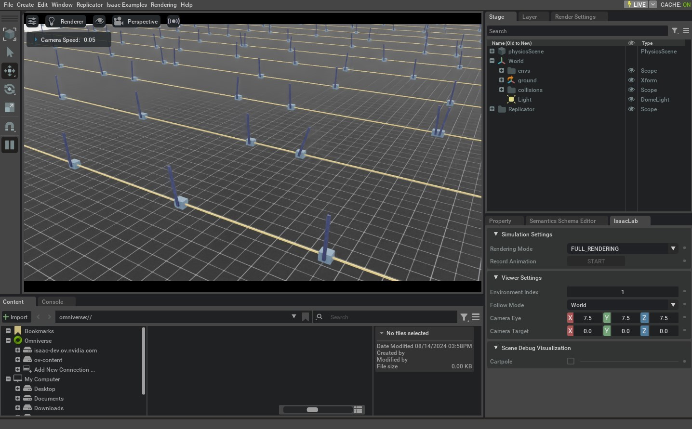

参见
本教程是 isaaclab-randomizing-with-events 智能体技能的权威依据（ skills/user/domain-randomization-events/ ）。修改本页时，也应更新该技能，使智能体指导保持同步。参见 智能体技能 。
创建直接工作流 RL 环境#
除了 envs.ManagerBasedRLEnv 类之外，还可以使用配置类来为更模块化的环境提供支持， DirectRLEnv 类允许在环境脚本化中进行更直接的控制。
直接工作流任务实现完全奖励和观测功能的直接任务脚本。这允许在方法的实现中更多地控制，比如使用 Pytorch jit 功能，并提供一个更少抽象的框架，更容易找到各种代码片段。
本教程使用直接工作流实现配置倒立摆环境，创建保持摆杆直立的任务。我们将声明场景，并实现动作、重置、奖励和观测。
代码#
本教程使用 isaaclab_tasks.core.cartpole 模块中定义的倒立摆环境。
cartpole_direct_env.py 代码
1# Copyright (c) 2022-2026, The Isaac Lab Project Developers (https://github.com/isaac-sim/IsaacLab/blob/main/CONTRIBUTORS.md).
2# All rights reserved.
3#
4# SPDX-License-Identifier: BSD-3-Clause
5
6"""Direct-workflow cartpole balancing environment."""
7
8from __future__ import annotations
9
10from collections.abc import Sequence
11from typing import TYPE_CHECKING
12
13import torch
14
15from isaaclab.envs import DirectRLEnv
16from isaaclab.utils.math import sample_uniform, wrap_to_pi
17
18if TYPE_CHECKING:
19 from .cartpole_direct_env_cfg import CartpoleEnvCfg
20
21
22class CartpoleEnv(DirectRLEnv):
23 """Cartpole balancing environment driven by proprioceptive (joint-state) observations."""
24
25 cfg: CartpoleEnvCfg
26
27 def __init__(self, cfg: CartpoleEnvCfg, render_mode: str | None = None, **kwargs):
28 super().__init__(cfg, render_mode, **kwargs)
29
30 self.cartpole = self.scene["cartpole"]
31 cart_dof_idx, _ = self.cartpole.find_joints(self.cfg.cart_dof_name)
32 pole_dof_idx, _ = self.cartpole.find_joints(self.cfg.pole_dof_name)
33 # device indices avoid per-step host uploads
34 self._cart_dof_idx = torch.tensor(cart_dof_idx, device=self.device)
35 self._pole_dof_idx = torch.tensor(pole_dof_idx, device=self.device)
36 self.action_scale = self.cfg.action_scale
37
38 self.joint_pos = self.cartpole.data.joint_pos.torch
39 self.joint_vel = self.cartpole.data.joint_vel.torch
40
41 def _pre_physics_step(self, actions: torch.Tensor) -> None:
42 self.actions = self.action_scale * actions
43
44 def _apply_action(self) -> None:
45 self.cartpole.set_joint_effort_target_index(target=self.actions, joint_ids=self._cart_dof_idx)
46
47 def _get_observations(self) -> dict:
48 joint_pos_rel = self.joint_pos - self.cartpole.data.default_joint_pos.torch
49 joint_vel_rel = self.joint_vel - self.cartpole.data.default_joint_vel.torch
50 obs = torch.cat(
51 (
52 joint_pos_rel[:, self._cart_dof_idx],
53 joint_pos_rel[:, self._pole_dof_idx],
54 joint_vel_rel[:, self._cart_dof_idx],
55 joint_vel_rel[:, self._pole_dof_idx],
56 ),
57 dim=-1,
58 )
59 return {"policy": obs}
60
61 def _get_rewards(self) -> torch.Tensor:
62 return compute_rewards(
63 self.cfg.rew_scale_alive,
64 self.cfg.rew_scale_terminated,
65 self.cfg.rew_scale_pole_pos,
66 self.cfg.rew_scale_cart_vel,
67 self.cfg.rew_scale_pole_vel,
68 self.joint_pos[:, self._pole_dof_idx],
69 self.joint_vel[:, self._pole_dof_idx],
70 self.joint_vel[:, self._cart_dof_idx],
71 self.reset_terminated,
72 self.step_dt,
73 )
74
75 def _get_dones(self) -> tuple[torch.Tensor, torch.Tensor]:
76 self.joint_pos = self.cartpole.data.joint_pos.torch
77 self.joint_vel = self.cartpole.data.joint_vel.torch
78
79 time_out = self.episode_length_buf >= self.max_episode_length
80 out_of_bounds = torch.any(torch.abs(self.joint_pos[:, self._cart_dof_idx]) > self.cfg.max_cart_pos, dim=1)
81 return out_of_bounds, time_out
82
83 def _reset_idx(self, env_ids: Sequence[int] | None):
84 if env_ids is None:
85 env_ids = self.cartpole._ALL_INDICES
86
87 # log the survival success rate before resetting (survived = timed out without terminating early)
88 survived = self.reset_time_outs[env_ids].float()
89 # no .item(): avoids a sync on every reset
90 self.extras.setdefault("log", {})["Metrics/success_rate"] = survived.mean()
91
92 super()._reset_idx(env_ids)
93
94 joint_pos = self.cartpole.data.default_joint_pos.torch[env_ids].clone()
95 joint_pos[:, self._cart_dof_idx] += sample_uniform(
96 self.cfg.initial_cart_position_range[0],
97 self.cfg.initial_cart_position_range[1],
98 joint_pos[:, self._cart_dof_idx].shape,
99 joint_pos.device,
100 )
101 joint_vel = self.cartpole.data.default_joint_vel.torch[env_ids].clone()
102 joint_vel[:, self._cart_dof_idx] += sample_uniform(
103 self.cfg.initial_cart_velocity_range[0],
104 self.cfg.initial_cart_velocity_range[1],
105 joint_vel[:, self._cart_dof_idx].shape,
106 joint_vel.device,
107 )
108 joint_pos[:, self._pole_dof_idx] += sample_uniform(
109 self.cfg.initial_pole_angle_range[0],
110 self.cfg.initial_pole_angle_range[1],
111 joint_pos[:, self._pole_dof_idx].shape,
112 joint_pos.device,
113 )
114 joint_vel[:, self._pole_dof_idx] += sample_uniform(
115 self.cfg.initial_pole_velocity_range[0],
116 self.cfg.initial_pole_velocity_range[1],
117 joint_vel[:, self._pole_dof_idx].shape,
118 joint_vel.device,
119 )
120
121 # clamp the sampled state to the joint limits (matches the manager-based reset_joints_by_offset)
122 joint_pos_limits = self.cartpole.data.soft_joint_pos_limits.torch[env_ids]
123 joint_pos = joint_pos.clamp_(joint_pos_limits[..., 0], joint_pos_limits[..., 1])
124 joint_vel_limits = self.cartpole.data.soft_joint_vel_limits.torch[env_ids]
125 joint_vel = joint_vel.clamp_(-joint_vel_limits, joint_vel_limits)
126
127 default_root_pose = self.cartpole.data.default_root_pose.torch[env_ids].clone()
128 default_root_pose[:, :3] += self.scene.env_origins[env_ids]
129 default_root_vel = self.cartpole.data.default_root_vel.torch[env_ids].clone()
130
131 self.joint_pos[env_ids] = joint_pos
132 self.joint_vel[env_ids] = joint_vel
133
134 self.cartpole.write_root_pose_to_sim_index(root_pose=default_root_pose, env_ids=env_ids)
135 self.cartpole.write_root_velocity_to_sim_index(root_velocity=default_root_vel, env_ids=env_ids)
136 self.cartpole.write_joint_position_to_sim_index(position=joint_pos, env_ids=env_ids)
137 self.cartpole.write_joint_velocity_to_sim_index(velocity=joint_vel, env_ids=env_ids)
138
139
140@torch.jit.script
141def compute_rewards(
142 rew_scale_alive: float,
143 rew_scale_terminated: float,
144 rew_scale_pole_pos: float,
145 rew_scale_cart_vel: float,
146 rew_scale_pole_vel: float,
147 pole_pos: torch.Tensor,
148 pole_vel: torch.Tensor,
149 cart_vel: torch.Tensor,
150 reset_terminated: torch.Tensor,
151 step_dt: float,
152) -> torch.Tensor:
153 pole_pos = wrap_to_pi(pole_pos)
154 rew_alive = rew_scale_alive * (1.0 - reset_terminated.float())
155 rew_termination = rew_scale_terminated * reset_terminated.float()
156 rew_pole_pos = rew_scale_pole_pos * torch.sum(torch.square(pole_pos), dim=-1)
157 rew_cart_vel = rew_scale_cart_vel * torch.sum(torch.abs(cart_vel), dim=-1)
158 rew_pole_vel = rew_scale_pole_vel * torch.sum(torch.abs(pole_vel), dim=-1)
159 total_reward = (rew_alive + rew_termination + rew_pole_pos + rew_cart_vel + rew_pole_vel) * step_dt
160 return total_reward
代码解释#
与基于管理器的环境类似，为任务定义一个配置类，以保存仿真参数、场景、actors 和任务的设置。使用直接工作流实现， envs.DirectRLEnvCfg 类作为配置的基类使用。由于直接工作流实现不使用 Action 和 Observation 管理器，任务配置应定义环境的动作和观测数。
@configclass
class CartpoleEnvCfg(DirectRLEnvCfg):
...
action_space = 1
observation_space = 4
state_space = 0
配置类也可以用来定义特定于任务的属性，例如奖励项的缩放和重置条件的阈值。
@configclass
class CartpoleEnvCfg(DirectRLEnvCfg):
...
# reset
max_cart_pos = 3.0
initial_pole_angle_range = [-0.25, 0.25]
# reward scales
rew_scale_alive = 1.0
rew_scale_terminated = -2.0
rew_scale_pole_pos = -1.0
rew_scale_cart_vel = -0.01
rew_scale_pole_vel = -0.005
在创建新环境时，代码应该定义一个新的类，该类继承自 DirectRLEnv 。
class CartpoleEnv(DirectRLEnv):
cfg: CartpoleEnvCfg
def __init__(self, cfg: CartpoleEnvCfg, render_mode: str | None = None, **kwargs):
super().__init__(cfg, render_mode, **kwargs)
该类也可以包含所有类函数都可访问的类变量，包括应用动作、计算重置、奖励和观测的功能。
场景创建#
直接工作流环境与基于管理器的环境使用相同的声明式场景生命周期。在 InteractiveSceneCfg 的子类中定义资产和传感器：
@configclass
class CartpoleSceneCfg(InteractiveSceneCfg):
"""Cartpole assets constructed and cloned as one scene."""
ground = AssetBaseCfg(prim_path="/World/ground", spawn=sim_utils.GroundPlaneCfg())
cartpole: ArticulationCfg = replace(CARTPOLE_CFG, prim_path="{ENV_REGEX_NS}/Robot")
light = AssetBaseCfg(
prim_path="/World/Light",
spawn=sim_utils.DistantLightCfg(intensity=2000.0),
init_state=AssetBaseCfg.InitialStateCfg(rot=LIGHT_ORIENTATION),
)
将该配置赋给任务的 scene 字段。 DirectRLEnv 会构建场景，并在任务构造函数继续执行前完成一次克隆生命周期。随后，任务代码可以保存已声明实体的引用，方便后续访问：
self.cartpole = self.scene["cartpole"]
定义奖励#
奖励函数应该在 _get_rewards(self) API 中定义，它将奖励缓冲区作为返回值返回。在这个函数内部，任务可以自由实现奖励函数的逻辑。在这个示例中，我们实现了一个计算奖励函数各个组成部分的 Pytorch JIT 函数。
def _get_rewards(self) -> torch.Tensor:
total_reward = compute_rewards(
self.cfg.rew_scale_alive,
self.cfg.rew_scale_terminated,
self.cfg.rew_scale_pole_pos,
self.cfg.rew_scale_cart_vel,
self.cfg.rew_scale_pole_vel,
self.joint_pos[:, self._pole_dof_idx[0]],
self.joint_vel[:, self._pole_dof_idx[0]],
self.joint_pos[:, self._cart_dof_idx[0]],
self.joint_vel[:, self._cart_dof_idx[0]],
self.reset_terminated,
)
return total_reward
@torch.jit.script
def compute_rewards(
rew_scale_alive: float,
rew_scale_terminated: float,
rew_scale_pole_pos: float,
rew_scale_cart_vel: float,
rew_scale_pole_vel: float,
pole_pos: torch.Tensor,
pole_vel: torch.Tensor,
cart_pos: torch.Tensor,
cart_vel: torch.Tensor,
reset_terminated: torch.Tensor,
):
rew_alive = rew_scale_alive * (1.0 - reset_terminated.float())
rew_termination = rew_scale_terminated * reset_terminated.float()
rew_pole_pos = rew_scale_pole_pos * torch.sum(torch.square(pole_pos), dim=-1)
rew_cart_vel = rew_scale_cart_vel * torch.sum(torch.abs(cart_vel), dim=-1)
rew_pole_vel = rew_scale_pole_vel * torch.sum(torch.abs(pole_vel), dim=-1)
total_reward = rew_alive + rew_termination + rew_pole_pos + rew_cart_vel + rew_pole_vel
return total_reward
定义观测#
观测缓冲区应该在 _get_observations(self) 函数中计算，它为环境构造了观测缓冲区。在这个 API 的结尾，应该返回一个包含 policy 为键和完整观测缓冲区为值的字典。对于不对称的策略，字典还应该包括 critic 键和状态缓冲区作为值。
def _get_observations(self) -> dict:
joint_pos_rel = self.joint_pos - self.cartpole.data.default_joint_pos.torch
joint_vel_rel = self.joint_vel - self.cartpole.data.default_joint_vel.torch
obs = torch.cat(
(
joint_pos_rel[:, self._cart_dof_idx],
joint_pos_rel[:, self._pole_dof_idx],
joint_vel_rel[:, self._cart_dof_idx],
joint_vel_rel[:, self._pole_dof_idx],
),
dim=-1,
)
return {"policy": obs}
计算终止和执行重置#
填充 dones 缓冲区应该在 _get_dones(self) 方法中完成。这个方法可以自由实现逻辑，计算哪些环境需要重置，哪些环境已经达到了本集长度限制。这两个结果都应该作为 _get_dones(self) 函数的返回值，以布尔张量的形式返回。
def _get_dones(self) -> tuple[torch.Tensor, torch.Tensor]:
self.joint_pos = self.cartpole.data.joint_pos.torch
self.joint_vel = self.cartpole.data.joint_vel.torch
time_out = self.episode_length_buf >= self.max_episode_length
out_of_bounds = torch.any(torch.abs(self.joint_pos[:, self._cart_dof_idx]) > self.cfg.max_cart_pos, dim=1)
return out_of_bounds, time_out
一旦计算出需要重置的环境的索引， _reset_idx(self, env_ids) 函数将在这些环境上执行重置操作。在这个函数内部，应该直接将需要重置的环境的新状态设置到仿真中。
def _reset_idx(self, env_ids: Sequence[int] | None):
if env_ids is None:
env_ids = self.cartpole._ALL_INDICES
# log the survival success rate before resetting (survived = timed out without terminating early)
survived = self.reset_time_outs[env_ids].float()
# no .item(): avoids a sync on every reset
self.extras.setdefault("log", {})["Metrics/success_rate"] = survived.mean()
super()._reset_idx(env_ids)
joint_pos = self.cartpole.data.default_joint_pos.torch[env_ids].clone()
joint_pos[:, self._cart_dof_idx] += sample_uniform(
self.cfg.initial_cart_position_range[0],
self.cfg.initial_cart_position_range[1],
joint_pos[:, self._cart_dof_idx].shape,
joint_pos.device,
)
joint_vel = self.cartpole.data.default_joint_vel.torch[env_ids].clone()
joint_vel[:, self._cart_dof_idx] += sample_uniform(
self.cfg.initial_cart_velocity_range[0],
self.cfg.initial_cart_velocity_range[1],
joint_vel[:, self._cart_dof_idx].shape,
joint_vel.device,
)
joint_pos[:, self._pole_dof_idx] += sample_uniform(
self.cfg.initial_pole_angle_range[0],
self.cfg.initial_pole_angle_range[1],
joint_pos[:, self._pole_dof_idx].shape,
joint_pos.device,
)
joint_vel[:, self._pole_dof_idx] += sample_uniform(
self.cfg.initial_pole_velocity_range[0],
self.cfg.initial_pole_velocity_range[1],
joint_vel[:, self._pole_dof_idx].shape,
joint_vel.device,
)
# clamp the sampled state to the joint limits (matches the manager-based reset_joints_by_offset)
joint_pos_limits = self.cartpole.data.soft_joint_pos_limits.torch[env_ids]
joint_pos = joint_pos.clamp_(joint_pos_limits[..., 0], joint_pos_limits[..., 1])
joint_vel_limits = self.cartpole.data.soft_joint_vel_limits.torch[env_ids]
joint_vel = joint_vel.clamp_(-joint_vel_limits, joint_vel_limits)
default_root_pose = self.cartpole.data.default_root_pose.torch[env_ids].clone()
default_root_pose[:, :3] += self.scene.env_origins[env_ids]
default_root_vel = self.cartpole.data.default_root_vel.torch[env_ids].clone()
self.joint_pos[env_ids] = joint_pos
self.joint_vel[env_ids] = joint_vel
self.cartpole.write_root_pose_to_sim_index(root_pose=default_root_pose, env_ids=env_ids)
self.cartpole.write_root_velocity_to_sim_index(root_velocity=default_root_vel, env_ids=env_ids)
self.cartpole.write_joint_position_to_sim_index(position=joint_pos, env_ids=env_ids)
self.cartpole.write_joint_velocity_to_sim_index(velocity=joint_vel, env_ids=env_ids)
应用动作#
有两个设计用于处理动作的 API。 _pre_physics_step(self, actions) 以来于策略的动作作为参数，每个 RL 步骤只调用一次，在采取任何物理步骤之前。这个函数可以用来处理来自策略的动作缓冲区，并将数据缓存到环境的类变量中。
def _pre_physics_step(self, actions: torch.Tensor) -> None:
self.actions = self.action_scale * actions
_apply_action(self) API 被称为 decimation 次数，每个 RL 步骤之前调用一次，在采取每个物理步骤之前。这为环境提供了更多的灵活性，可以对需要为每个物理步骤应用动作的环境。
def _apply_action(self) -> None:
self.cartpole.set_joint_effort_target_index(target=self.actions, joint_ids=self._cart_dof_idx)
代码执行#
要运行直接工作流 Cartpole 环境的训练，我们可以使用以下命令:
uv run --extra rl-games isaaclab train --rl_library rl_games --task=Isaac-Cartpole-Direct
./isaaclab.sh train --rl_library rl_games --task=Isaac-Cartpole-Direct

所有直接工作流任务的名称都添加了后缀 -Direct 以区分实现风格。
域随机化#
在直接工作流中，域随机化配置使用 configclass 模块来指定包含 EventTermCfg 变量的配置类。
以下是一个域随机化的配置类示例:
@configclass
class EventCfg:
robot_physics_material = EventTerm(
func=mdp.randomize_rigid_body_material,
mode="reset",
params={
"asset_cfg": SceneEntityCfg("robot", body_names=".*"),
"static_friction_range": (0.7, 1.3),
"dynamic_friction_range": (1.0, 1.0),
"restitution_range": (1.0, 1.0),
"num_buckets": 250,
},
)
robot_joint_stiffness_and_damping = EventTerm(
func=mdp.randomize_actuator_gains,
mode="reset",
params={
"asset_cfg": SceneEntityCfg("robot", joint_names=".*"),
"stiffness_distribution_params": (0.75, 1.5),
"damping_distribution_params": (0.3, 3.0),
"operation": "scale",
"distribution": "log_uniform",
},
)
reset_gravity = EventTerm(
func=mdp.randomize_physics_scene_gravity,
mode="interval",
is_global_time=True,
interval_range_s=(36.0, 36.0), # time_s = num_steps * (decimation * dt)
params={
"gravity_distribution_params": ([0.0, 0.0, 0.0], [0.0, 0.0, 0.4]),
"operation": "add",
"distribution": "gaussian",
},
)
每个 EventTerm 对象都是 EventTermCfg 的实例。它接受 func 参数指定随机化时调用的函数，并接受 mode 参数选择 startup 、 reset 或 interval 模式。 params 字典应提供 func 指定函数所需的参数。 EventTerm 可使用的 func 函数可在 events 模块中找到。
请注意，在 "asset_cfg": SceneEntityCfg("robot", body_names=".*") 参数中，提供了 actor "robot" 的名称，以及作为正则表达式表达的主体或关节名称，这些将是将随机化应用于的 actor 和主体/关节。
一旦设置了随机化术语的 configclass 类，该类必须添加到任务的基本配置类中，并分配给变量 events 。
@configclass
class MyTaskConfig:
events: EventCfg = EventCfg()
动作和观测噪声#
使用 configclass 模块也可以添加动作和观测噪声。必须将动作和观测噪声配置添加到主要任务配置中，使用 action_noise_model 和 observation_noise_model 变量:
@configclass
class MyTaskConfig:
# at every time-step add gaussian noise + bias. The bias is a gaussian sampled at reset
action_noise_model: NoiseModelWithAdditiveBiasCfg = NoiseModelWithAdditiveBiasCfg(
noise_cfg=GaussianNoiseCfg(mean=0.0, std=0.05, operation="add"),
bias_noise_cfg=GaussianNoiseCfg(mean=0.0, std=0.015, operation="abs"),
)
# at every time-step add gaussian noise + bias. The bias is a gaussian sampled at reset
observation_noise_model: NoiseModelWithAdditiveBiasCfg = NoiseModelWithAdditiveBiasCfg(
noise_cfg=GaussianNoiseCfg(mean=0.0, std=0.002, operation="add"),
bias_noise_cfg=GaussianNoiseCfg(mean=0.0, std=0.0001, operation="abs"),
)
NoiseModelWithAdditiveBiasCfg 可以用来对每个步骤进行无关噪声的采样，以及在重置时重新采样的相关噪声。
noise_cfg 术语指定了将在每一步中为所有环境进行采样的高斯分布。这个噪声将被添加到相应的动作和观测缓冲区中的每一步。
bias_noise_cfg 术语指定了在重置时为被重置的环境进行采样的相关噪声的高斯分布。对于剩余的环境，这个相同的噪声将在每一步应用，并在下一次重置时重新采样。
如果只希望每步有噪声，可以使用 GaussianNoiseCfg 来指定一个会将采样噪声添加到输入缓冲区中的混合高斯分布。
@configclass
class MyTaskConfig:
action_noise_model: GaussianNoiseCfg = GaussianNoiseCfg(mean=0.0, std=0.05, operation="add")
本教程介绍了如何创建用于强化学习的直接工作流任务环境。我们在配置中声明场景，并通过动作、结束状态、重置、奖励和观测函数扩展基础环境。
虽然可以手动创建所需任务的 DirectRLEnv 类的实例，但这种方法不具有可扩展性，因为它需要为每个任务编写专门的脚本。因此，在接下来的教程中，我们将利用 gymnasium.make() 函数来使用 gym 接口创建环境。